vignettes/rationale5_bayesian.Rmd
rationale5_bayesian.RmdIn DRpower we take a different approach to analysis that deals with all of the issues listed in the previous section. We describe the approach at a high level here, for those wanting more mathematical details please see this page.
We start by assuming a random effects framework. Instead of assuming that all individuals have the same probability of carrying the pfhrp2/3 deleted strain, we allow each cluster to have its own cluster-level prevalence. We model the mean and the spread of this cluster-level variation using a random effects distribution - in our case a beta distribution like the one shown below:

This distribution has a mean value \(p\) that represents the province-level prevalence of deletions (i.e. the main thing we are trying to estimate). It also has a parameter \(r\) that represents the level of intra-cluster correlation and hence overdispersion. Larger values of \(r\) lead to more spread out distributions. Our objective is to estimate \(p\) while taking into account uncertainty in \(r\), which we can do very easily within a Bayesian framework. A full description of Bayesian statistics is beyond the scope of this document, but in short we:
We end up with a probability distribution that describes the plausible range of values that \(p\) could take. We can use this in many different ways, for example we can calculate a credible interval (CrI). CrIs have a slightly different and more direct interpretation than confidence intervals (CIs) - a 95% CrI means there is a 95% probability that the true value lies inside this interval (compare this with the definition of a CI). This immediately deals with the first 4 out of 5 issues listed in the previous section.
We can also output from the model the posterior probability that prevalence is above the 5% threshold. We can turn this into a hypothesis test by rejecting the null hypothesis whenever this probability is above a certain level. This gives us a binary decision tool just like the traditional approach, but now with all the advantages of the Bayesian method.
We can run the DRpower model on our example data as follows:
get_prevalence(n = n_deletions, N = n_tested)
#> MAP CrI_lower CrI_upper prob_above_threshold
#> 1 13.98 6.11 28.13 0.9969The first output is the maximum a posteriori (MAP) estimate, which gives us a point estimate of 13.98% prevalence - very close to our original estimate of 14% from the raw data. There are other summaries that we might be interested in, but see here when deciding between them.
Based on the output above, we also estimate that there is a 0.9969 probability that the prevalence is above 5%. By default we recommend using a cutoff of 0.95 when turning this into a hypothesis test, so in this case we can reject the null hypothesis. Based on this analysis, therefore, we have sufficient evidence to conclude that prevalence is above our target threshold, and so a switch of RDTs is justified.
In summary, the DRpower model provides an alternative way of analysing clustered prevalence data that has some advantages over traditional methods. It can be used to calculate CrIs, and/or it can be used in a hypothesis testing framework. The next section describes how this framework can be used in study design.